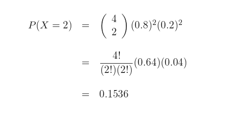

DISTRIBUCIONES DE PROBABILIDAD
Una distribución de probabilidad es aquella que permite establecer toda la gama de resultados probables de ocurrir en un experimento determinado. Es decir, describe la probabilidad de que un evento se realice en el futuro.
variable aleatoria discreta
Solo puede tomar valores representados por números enteros y un número finito de ellos. Por ejemplo:
X variable que nos define el número de alumnos aprobados en el curso de historia universal en un grupo de 30 alumnos (1, 2 ,3 y así sucesivamente ó los 30).
variable aleatoria continua
Esta puede tomar tanto valores expresados en números enteros como fraccionarios y un número infinito de ellos dentro de un mismo intervalo. Por ejemplo:
x es la variable que nos define la concentración en gramos de oro de algunas muestras de mineral (7.4 gr, 6.1, 1.9, 23.3, 12.7, 8.1, 9.5, 11.8, ... n)
DISTRIBUCIÒN BINOMIAL
donde
{n} es el número de pruebas.
{k} es el número de éxitos.
{p} es la probabilidad de éxito.
{q} es la probabilidad de fracaso.
ejemplo:
La última novela de un autor ha tenido un gran éxito, hasta el punto de que el 80% de los lectores ya la han leído. Hallar la probabilidad de que en un grupo de 4 amigos que son aficionados a la lectura, 2 hayan leído la novela.
1. La probabilidad de que una persona haya leído el libro es de 0.8, por lo que la probabilidad de que no lo haya leído es de 0.2

2. La probabilidad de que exactamente 2 personas del grupo de 4 amigos hayan leído la novela se representa por P(X=2).
3. Sustituimos los datos en la función de probabilidad de la distribución binomial

DISTRIBUCIÒN HIPERGEOMETRICA
es especialmente útil en todos aquellos casos en los que se extraigan muestras o se realicen experiencias repetidas sin devolución del elemento extraído o sin retornar a la situación experimental inicial.
Es una distribución fundamental en el estudio de muestras pequeñas de poblaciones pequeñas y en el cálculo de probabilidades de juegos de azar. Tiene grandes aplicaciones en el control de calidad para procesos experimentales en los que no es posible retornar a la situación de partida.
Las consideraciones a tener en cuenta en una distribución hipergeométrica:
1. El proceso consta de "n" pruebas, separadas o separables de entre un conjunto de "N" pruebas posibles.
2. Cada una de las pruebas puede dar únicamente dos resultados mutuamente excluyentes.
3. El número de individuos que presentan la característica A (éxito) es "k".
4. En la primera prueba las probabilidades son: P(A)= p y P(A)= q; con p+q=1.
ejemplo:
Supongamos la extracción aleatoria de 8 elementos de un conjunto formado por 40 elementos totales (cartas baraja española) de los cuales 10 son del tipo A (salir oro) y 30 son del tipo complementario (no salir oro).
Si realizamos las extracciones sin devolver los elementos extraídos y llamamos X al número de elementos del tipo A (oros obtenidos) que extraemos en las 8 cartas; X seguirá una distribución hipergeométrica de parámetros 40 , 8 , 10/40.H(40,8,0,25).
Para calcular la probabilidad de obtener 4 oros:
DISTRIBUCIÒN DE POISSON
Esta función se entiende como la probabilidad de que la variable aleatoria X tome un valor concreto x. Es la exponencial de la media negativa multiplicada por la media elevada a la observación y todo dividido por el factorial de la observación.
La distribución de Poisson se utiliza en el campo de riesgo operacional con el objetivo de modelar las situaciones en que se produce una pérdida operacional.
ejemplo:
Suponemos que estamos en temporada de invierno y queremos ir a esquiar antes de diciembre. La probabilidad que abran las estaciones de esquí antes de diciembre es del 5%. De las 100 estaciones de esquí, queremos saber la probabilidad de que la estación de esquí más cercana abra antes de diciembre. La valoración de esta estación de esquí es de 6 puntos.
Los inputs necesarios para calcular la función de probabilidad de densidad de la Poisson son el conjunto de datos y mu:
1. Conjunto de datos = 100 estaciones de esquí.
2. Mu = 5% * 100 = 5 es el número de estaciones de esquí esperado dado el conjunto de datos.